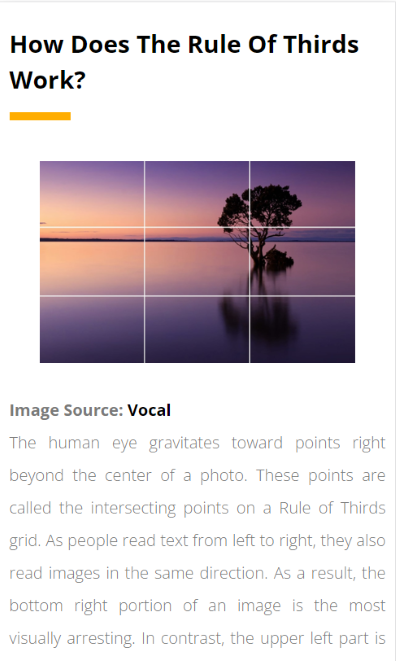
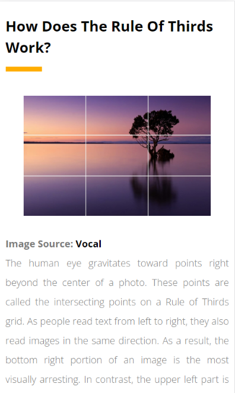

Rule of Thirds
Nashville Film Institute
https://www.nfi.edu/rule-of-thirds/ The blog very clearly illustrates guidlines for how the rule of thirds is applied using a 3x3 grid pattern and putting key refrences on the top two intersections
Nashville Film Institute
https://www.nfi.edu/rule-of-thirds/ The blog very clearly illustrates guidlines for how the rule of thirds is applied using a 3x3 grid pattern and putting key refrences on the top two intersections
Interaction Design Foundation
https://www.interaction-design.org/
This blog explains some key concepts to apply which will greatly enchance your displays.
Justinmind
https://www.justinmind.com/blog/white-space-design/
White Space is a very important aspect in web development. addings white space allows users to quickly visualize content and creates less distractions.